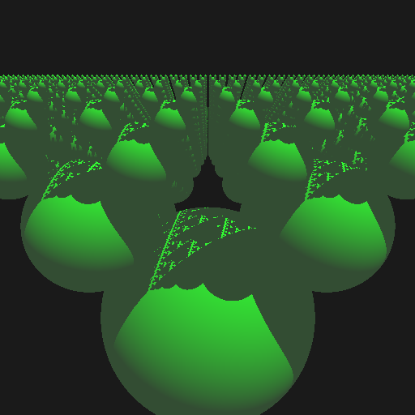
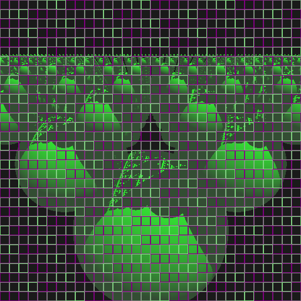

A Multi-threaded Go Raytracer
Above is the output of the raytracer. Below is a diagnostic mode showing which goroutines raytraced which section of the screen. Each goroutine has its own color to outline the pixels it traces:
I wrote a simple multi-threaded ray tracer in Google's new "go" language. It's an adaptation of Flying Frog Consultancy's Raytracer.
It runs single-threaded about 1/2 the speed of a comparable C++ version. I guess the C++ version benefits from a more optimizing compiler and the ability to inline small functions.
Compared to ordinary C/C++, the Go version was easier to multithread.
On my dual-core Macbook Pro I get an 1.80x speedup when running with GOMAXPROCS > 1:
$ GOMAXPROCS=1 time ./gotrace
**1.52** real 1.50 user 0.01 sys
$ GOMAXPROCS=2 time ./gotrace
**0.82** real 1.50 user 0.01 sys
$ GOMAXPROCS=3 time ./gotrace
**0.81** real 1.50 user 0.01 sys
On an eight-core, 16 Hyperthread HP Z600 running Ubuntu 9.10, (with the source code changed to use 16 goroutines instead of the default 8 goroutines) I get a 5.8x speedup:
$ GOMAXPROCS=1 time ./gotrace
1.05user 0.01system 0:01.06elapsed 99%CPU (0avgtext+0avgdata 0maxresident)k
0inputs+1544outputs (0major+2128minor)pagefaults 0swaps
$ GOMAXPROCS=16 time ./gotrace
1.32user 0.00system 0:00.18elapsed 702%CPU (0avgtext+0avgdata 0maxresident)k
0inputs+1544outputs (0major+2190minor)pagefaults 0swaps
Source code gotracer.zip